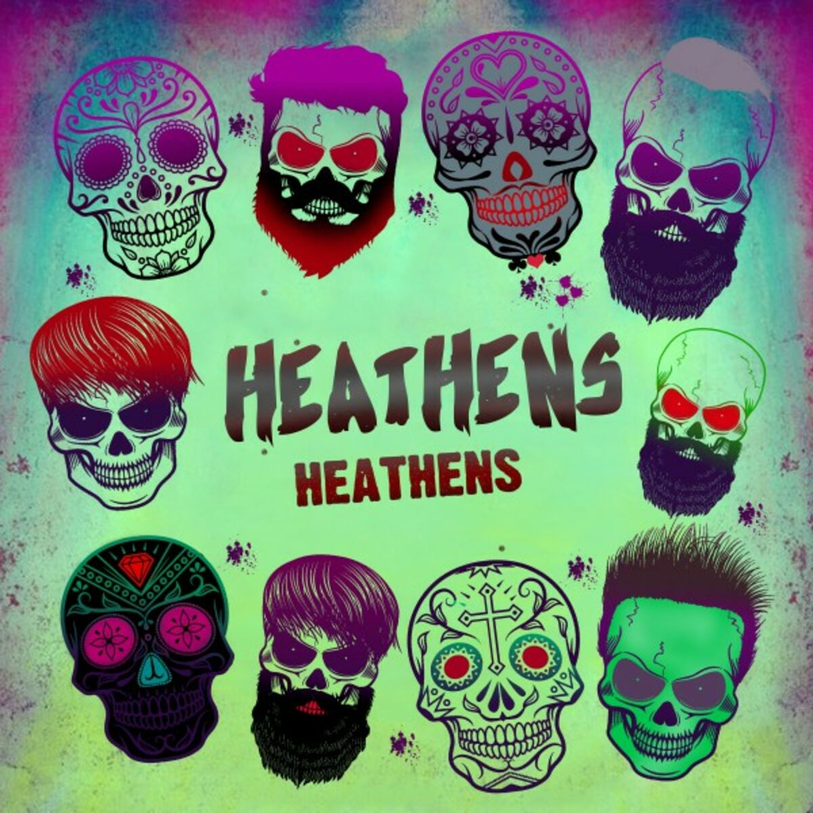

About Twenty One Pilots
Twenty One Pilots are an American musical duo from Columbus, Ohio. Initially a band, the group was formed in 2009 by lead vocalist Tyler Joseph along with Nick Thomas and Chris Salih, who both left in 2011. Since their departure, the line-up has consisted of Joseph and drummer Josh Dun.
Highlighted Songs
Heathens
"Heathens" by Twenty One Pilots is about Tyler Joseph encouraging new TOP fans to be careful when encountering the Skeleton Clique.
Stressed Out

"Stressed Out" is about the harsh end of adolescence. The song is an ode with lyrics speaking on the transition from adolescence to adulthood and nostalgia for the innocence of childhood. They touch on adolescent insecurity and address millennial angst while discussing relatable life challenges.
Ride
"Ride," is out, and it's full of thoughts on death, life, and living. It's somewhat cryptic, and the music is reminiscent of "Isle of Flightless Birds" but (as with any song on Blurryface) certainly different enough to defy styles and trends. "